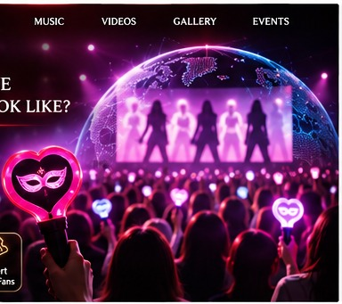

02 / THE AUDIENCE
A Global Fandom. One Shared Stage.
Research Question 2
Who is the target audience, and what does its fan base look like?
The primary proposed audience is K-pop fans ages 16–35 who enjoy choreography, collecting artist content, following and attending concerts, and participating in online fan communities. The group aims to reach a global audience across different languages, time zones, and accessibility needs.

Primary proposed age range for the band's target audience.
International K-pop fans across different regions, languages, and cultures.
Fans who participate in online communities, follow their favorite artists, and attend live concerts.
The proposed website will prioritize a mobile-first design to support fans accessing content through smartphones and tablets. The website will also feature readable content, accessible color contrast, multilingual-ready navigation, and clearly organized concert and event information. These features will help create an inclusive digital experience for an international fan community.
Academic concept only. The band and proposed digital capabilities are fictional. This is not a functioning artist website. Visuals are illustrative.